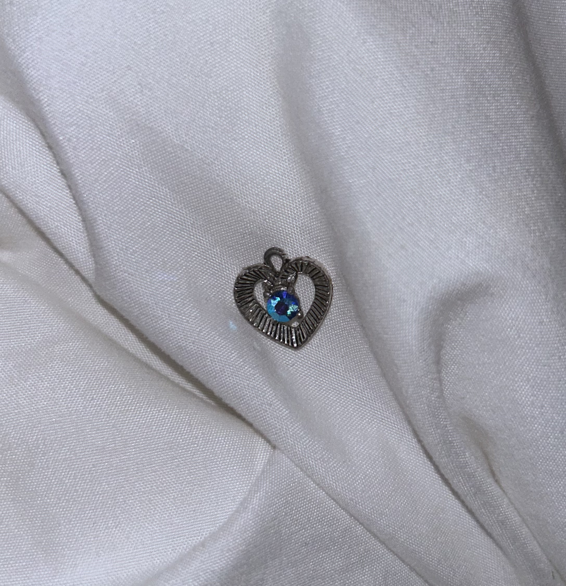
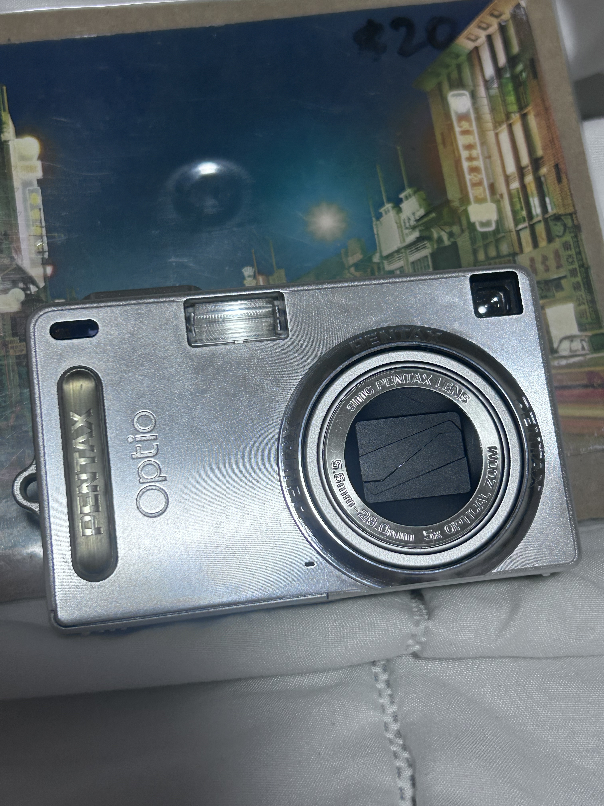
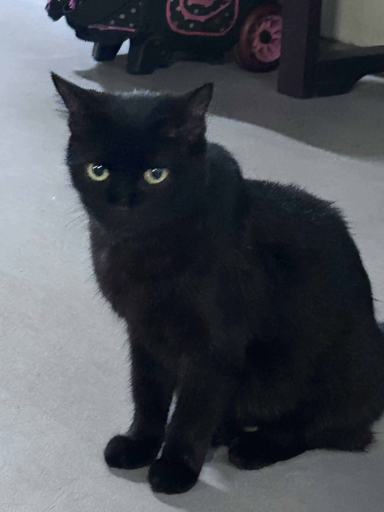

Today I am attempting to make SUSHI BAKE! 🍣 After months and months of being cripplingly addicted to cooking Youtube shorts I have finally decided to try a recipe…… and I thought this looked simple enough. I was regretting my decision really hard when I was in the supermarket buying ingredients because it was SO heavy, mainly because of the sauces and the sesame oil. My right arm was clinging onto my body for its life and I was really scared of the bag breaking and having to pick up all my stuff infront of everybody, but thankfully it didn’t break. I also bought some backup dinner from the supermarket in case this doesn’t turn out edible. 😸 I was thinking of just getting out of there when I realised everything was too heavy, but I had already spent so long to find most of the ingredients (I do not frequent at the supermarket… almost never) so I decided to just bear with it. The cost of everything was enough to make me regret again though…
Right now I’m waiting for the rice cooker to finish cooking my rice, and I’m staring at the salmon… concoction that I’ve put together. It smells like cat food, and I think I was supposed to throw away the juice, but I didn’t, and now it’s all gooey and looks nothing like the Youtube short I’m referencing. I honestly started losing my appetite while I was mixing all the stuff together. Oh well…… I really hope this turns out good…
Because of that ordeal I put myself through, I actually didn’t go to study after class today, breaking my routine. But, something lucky happened to me as a result! I was visiting all the neighbourhood kitties as usual, and this guy (maybe my age or younger) came up to me and said, “Hello, you feed the cats regularly right?” To which I answered no, because not… really? Either way, he asked me to wait while he went back to his house and then gave me a free packet of wet cat food because apparently he bought it on accident. Looks like the ginger cat will be getting a free meal soon!🐱🥧
20:55
Well, I don’t know how to work the rice cooker so it didn’t cook even after 25 minutes. I’m using the stove now.
21:12
I finally put it in the oven! I didn’t preheat the oven though so I’m just going to watch and take it out when it turns golden brown.

21:27
It’s done!!! :D The design is modern art. Honestly it tastes pretty good for my standards, but then again salmon is my favourite food so it’d be hard to ruin it… It’s so hot though and I somehow almost got burnt even while using mittens and a table cloth for extra protection. I really hate getting near anything hot, so I don’t like cooking and especially baking. I don’t know if I’ll be doing this again… It’s a little too salty. Overall, I’d consider this a success because it was edible! ⭐️
25 Feb 22:14
I am in a slightly gloomier mood today, for no reason really. For class we had to do some group work, but of course because I joined as the last member of a friend group, it is always really awkward and I mainly just sit there and do what I’m asked to do. Of course, we needed some communication, but they didn’t speak to me, except for the guy next to me who said “Hello” when I arrived to class. He immediately moved his seat when we had to start the work (because we had to communicate with the others) and I sat there blankly for a long time. I finally plucked up the courage to ask him some things. We exchanged a couple sentences about the work, and I asked if I could leave when I was done. He also asked if I was okay while he was going to the bathroom. Then he asked if I was going home, and was the only person who said goodbye to me.
7 Mar 12:20
I was watching a Youtube video where they read and discussed Reddit stories about relationships. Ironically, while I was halfway through the video they began fighting again. This is so reminiscent of my childhood, just like the old days… I truly wonder how it is even possible that after all these decades of being together, they are just so irreconcilably insufferable to each other, and neither has begun to wear the other down. They have definitely worn me down.
So much so that I almost lost track of what my lifelong goal has always been, which is to escape from here. Is it usually this hard to escape for most people? I wonder if I will actually end up escaping…? I hate to think about the future.
I’m really scared of losing track of what I have always wanted in life and ‘betraying’ younger me; in that video I was watching, the narrator of one post talked about how she “changed” from when she was younger. She was, unsurprisingly, not okay with cheating when she was younger, but now that she’s started a family, she thinks it’s fine to move on and pretend it never happened. It’s scary, isn’t it, how as you grow older your younger self’s convictions and dreams (maybe even your virtues?) grow blurrier and blurrier until you become someone else? I don’t want to become someone I’d be so deeply ashamed of because I chose to cope with harsh realities instead of doing something about it..
Anyway, I think I’ll go to a antique flea market on Saturday, because a huge event is happening where a lot of vendors will be selling their stuff there. I know I’ll reeeaally hate the crowd but I’m also really interested in the stuff that’s gonna be there, like STAMPS… or vinyl records or other useless things that will collect dust in my room… I cannot wait to collect more STAMPS from all over the world!!! It’s a bit of a long journey but I hope it will be worth the trip…
I will make sure to share my newly acquired possessions ᕙ( •̀ ᗜ •́ )ᕗ
8 Mar 20:05
So……. there weren’t any stamps….. and the place was much smaller than I thought. I ended up getting another digital camera, a beautiful postcard and a charm. These days, vintage stuff are so expensive, maybe because it’s a trend or something, but the postcard was $20… it was the nicest one there but still…. There were cool bank notes too but they were also $20…

And I’m pretty sure I got scammed for the charm because they kind of decided the price when I asked, and asked for $10 when the rest were like $6, and this was the smallest charm…. I’m pretty sure I always get scammed because they think I’m just a kid, it’s kind of annoying sometimes… I did kind of feel like I found a ‘hidden gem’ though, so I didn’t want to let it go. It’s such a pretty shade of blue, and if I can clean the silver up it might look really nice? It's very small, about the size of my finger. 
The guy at the camera booth was really sweet and helpful though, but I always hate how awkward it is because really I want to try all of the cameras but that’s… too much.. so I just tried a few and settled on one. A PentaX Optio SVi, also released in 2005 like my first digital camera, a Fujifilm. 
I’m really bummed about the stamps though. What do I have to do to get some stamps… Anyway, I plan on starting… scrapbooking? journalling? with physical items like receipts or other kinds of memorabilia, I think it could be fun. I threw away all of my stuff from childhood because I saw no value in them, or maybe I wanted to get rid of the memories, but I find myself wanting to live more meaningfully these days, even if I don't end up keeping them in the end or passing them on to anyone. I also made a new friend on my way home! Black cats are the best 🐾🐈⬛  back